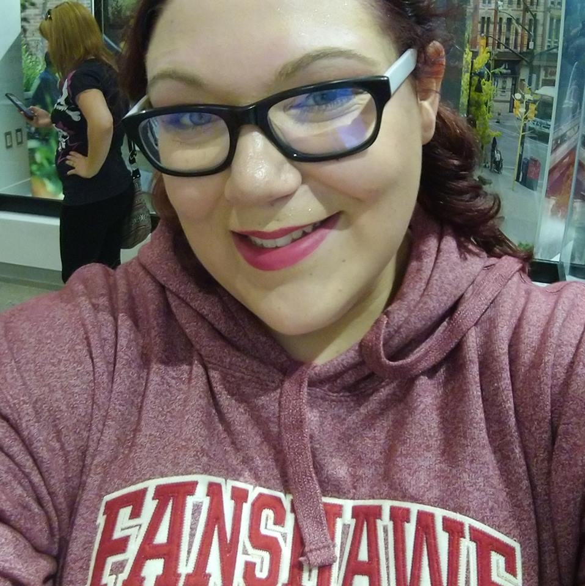
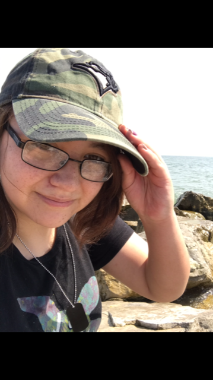

We are a team of two highly talented students with a lot to offer. The following are short bios of the two of us:
I am both a coder and an artist, and have spent 2 years in the UOIT Game Development and Entrepreneurship program. I love cats, music and video games. My favorite band is the band Bleachers and my favorite book is Desiree by Annemarie Selinko. I have many things going on in my life such as my Dialetical Behavioural Therapy group, personal training at Goodlife as well as hopefully a Dungeons and Dragons group. I also have many hobbies such as my online roleplaying community, playing video games and exploring meditation and other "new age" and holistic medicine such as Reiki.
I like to draw and tell stories and this is my first year in college. my dream is to become an animator and create my own cartoons but I would'nt mind becoming a web developer. Learning code is hard work but I am very interested in it and wish to know more. My favourite colour is green and my favourite show right now is RWBY. I like to learn new things but I hate homework. I have one cat and two dogs. They are my pride and joy.
>>>>>>> 58b7cd5ab2334ce84a96e63299cebd0568c5146a